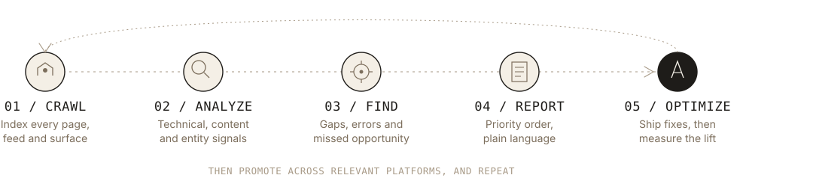
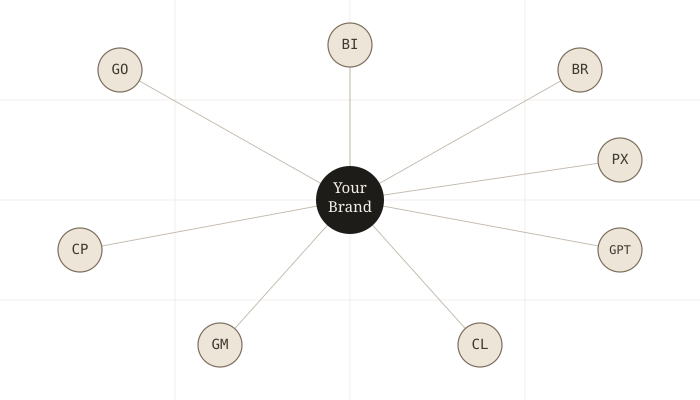
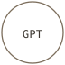

SEO, GEO and website builds, engineered for how search and AI actually retrieve content.
Four services, one underlying method: crawl the site the way a machine does, find what's holding visibility back, and fix it in an order that compounds. Below is what each service covers and the platforms the work is built for.
Four services, one method underneath them.
SEO
Technical SEO, on-page structure and content architecture, so traditional search engines can crawl, index and rank a site without friction.
Search EnginesGEO
Generative Engine Optimization: structuring content and entities so AI models can retrieve, parse and cite a brand accurately in their answers.
AI PlatformsWebsite Development
Sites built on the CMS that fits the business, with SEO and GEO fundamentals in place from the first commit, not bolted on afterward.
Build & MigrateOrganic Growth Hacking
Experiment-driven tactics for compounding organic reach: content loops, community distribution and low-cost channels that don't rely on paid spend.
GrowthEvery engagement runs the same five stages, in the same order.
Skipping a stage is usually where visibility gets lost, whether that's for a search engine or an AI model.

Built for the engines people search, and the models people ask.
Traditional ranking and AI citation are measured and optimized separately, since a page can rank well and still never get retrieved by a model, or the other way round.


ChatGPTIncludes coverage for AI Overviews inside Google search, and other AI answer surfaces as they gain meaningful query share.
The path a page takes before it becomes a citation.
Each stage has to hold up on its own. A page can have strong authority and still never get cited if it's chunked or structured in a way a model can't use.
Signals that establish a domain and author as credible enough to be worth indexing in the first place.
How a page gets split into smaller passages at indexing time, since models retrieve and cite chunks, not entire pages.
People, products and concepts defined clearly enough within each chunk for a model to match them confidently to a query.
The actual questions people ask, and whether a chunk's language overlaps with how those questions get phrased.
The moment a model searches its index against a prompt and pulls the matching chunk, not just when a crawler first finds the page.
The retrieved chunk gets named or linked as the source behind an AI answer, the outcome every earlier stage builds toward.
Built on the platform that fits the business.
New builds, redesigns and migrations, with clean architecture, structured data and crawlable markup in place before launch, not patched in after.